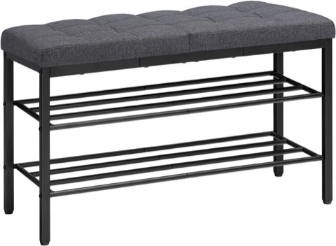

A mudroom does a lot of quiet, unglamorous work for a household.
It is the room that catches the mud, the backpacks, the dog leashes, and the stray mail before any of it makes its way further into the house, which makes it one of the few rooms where function has to come before style.
That does not mean it has to look purely utilitarian, though.
The best mudrooms manage both: a system that actually gets used every day, built into a space that still feels like part of the home.

19 Mudroom Ideas for Every Home
1. Personalized Mudroom Ideas for Every Home
This idea matters more than any single storage trick on this list.
A mudroom works best when it actually reflects how a household lives day to day, not how someone else's space was staged for a photo.
A family with three kids and two dogs needs a very different setup than a couple living alone, and building around real daily habits will always outperform copying a layout that does not match the household using it.
2. Seasonal Storage Rotation
There is little reason to keep snow boots taking up prime real estate in the middle of summer.
Rotating mudroom storage by season, swapping winter coats and boots for sandals and rain gear as the weather changes, keeps the space relevant to what is actually needed at any given time.
A labeled bin in a closet or attic for the off-season items keeps them out of the way without losing track of where they are.
3. Modern Mudroom Ideas With Clean Lines
For anyone who prefers a sleeker, more minimal look, a modern mudroom can hide just as much mess while still keeping everything accessible.
Flat-panel cabinetry, concealed storage, and a neutral palette keep the space looking streamlined rather than busy.
The visual clutter stays tucked behind clean surfaces, which suits a home where the entry is visible from the main living areas.
4. Rustic Mudroom Style That Feels Warm
Rustic does not have to mean outdated, in a mudroom, it often reads as genuinely welcoming instead.
Reclaimed wood shelving, iron hooks, and a woven rug or runner bring warmth into what can otherwise be a purely functional, sterile-feeling space.
The style also tends to hide everyday wear and tear more gracefully than a sleeker, more polished finish would.
5. Multi-Purpose Mudroom and Laundry Combo
Combining a mudroom with a laundry area makes efficient use of a home's square footage, especially in a smaller house where a dedicated room for each is not realistic.
A bench and hooks on one side, with the washer, dryer, and folding space on the other, lets one room handle both arrival and household chores.
Keeping any cleaning supplies and detergent safely out of reach of kids is worth double-checking in a shared space like this.
6. Mudroom Ideas for Homes With Kids
Kids come with an outsized amount of gear for their size, backpacks, shoes, sports equipment, seasonal layers, all needing somewhere to go.
Lower hooks and reachable cubbies, sized specifically for a child's height, make it realistic for kids to manage their own storage instead of relying on an adult to do it for them.
Mornings tend to feel calmer once kids can actually reach and use their own designated space without help.
7. Mudroom Flooring That Handles Real Life
Flooring matters more in a mudroom than almost any other room in the house, since it takes the brunt of dirt, water, and daily wear.
Tile, luxury vinyl, or sealed wood all hold up considerably better than carpet, which tends to trap moisture and stain quickly in a high-traffic entry.
A durable, easy-to-clean floor is one of the few mudroom decisions worth prioritizing over the purely decorative ones.
8. Mudroom Storage That Doubles as Decor
Storage does not have to look purely utilitarian to actually function well.
Woven baskets, labeled bins in a cohesive color palette, or a vintage cabinet repurposed for shoes all do the practical job while still contributing to the room's overall look.
Clutter tends to feel far less offensive once the storage holding it actually looks intentional rather than improvised.
9. Vertical Storage to Maximize Wall Space
When floor space runs out, going vertical is usually the easiest fix.
Stacked shelving, a tall cabinet, or hooks mounted higher up the wall all make use of space that would otherwise sit empty above eye level.
It is a particularly useful approach for storing off-season items that do not need to be reached every day, keeping the more accessible lower shelves free for daily use.
10. Small Mudroom Ideas for Apartments
Apartment living does not rule out a functional mudroom setup, even without the option for a full renovation.
A slim console table near the door, a few well-placed hooks, and one basket for shoes can recreate most of what a built-in mudroom offers, just in a smaller footprint.
Creativity and a drill usually accomplish more here than square footage ever could.
11. Mudroom Ideas for Homes With Pets
Pets bring plenty of joy, and just as reliably, plenty of mud.
A dedicated basket or bin for leashes, towels, and paw-cleaning supplies, kept right at the door, makes post-walk cleanup considerably less chaotic.
A built-in or freestanding spot for a pet bed near the entry also gives a dog somewhere to settle right after coming inside, instead of tracking through the rest of the house first.
12. Garage Mudroom Ideas That Feel Intentional
A garage entry does not have to feel like an afterthought just because it is not the home's main entrance.
A simple rug, a row of hooks, and reasonably decent lighting go a long way toward making a garage mudroom feel planned rather than accidental.
Since it is usually the entry used daily, it is worth treating with the same care as a front hallway, even if guests rarely see it.
13. Slim Mudroom Ideas for Narrow Entryways
A narrow entryway does not rule out a functional mudroom setup, even when the available depth is limited.
As little as 6 to 8 inches of depth is often enough to hold a row of hooks, a slim shelf for bags, or a shoe rack built specifically for a tight footprint.
A small space still deserves a considered layout, it just requires a bit more intention about what actually needs to live there.
14. Hidden Mudroom Behind Cabinet Doors
For a home with an open floor plan, where the entry opens straight into the living space, a hidden mudroom behind cabinet doors keeps the clutter out of view entirely.
Everything, hooks, shelves, a bench, stays tucked inside, and the cabinet fronts blend into the rest of the room's cabinetry or trim.
It is an especially good fit for a smaller home where a dedicated, fully visible mudroom space is not really an option.
15. Built-In Bench With Shoe Storage
A built-in bench is one of the most dependable mudroom upgrades there is, and it rarely disappoints.
It gives everyone a place to actually sit down while putting on or taking off shoes, and storage tucked underneath, open cubbies or closed drawers, depending on how much visual clutter feels tolerable, keeps footwear from spreading across the floor.
Closed drawers work well for anyone who prefers a cleaner look, while open cubbies keep everyday shoes faster to grab.

HOOBRO Shoe Bench, Storage Bench with Cushion, Entryway Bench Shoe Shelf
Shop on Amazon16. Wall Hooks Instead of Closets
A closet hides clutter, but a row of hooks actually prevents it from building up in the first place.
Mounting hooks at a few different heights means everyone in the household, including kids, has one within easy reach.
Items that are genuinely easy to hang up tend to actually get hung up, which is the whole point of a mudroom to begin with.
17. Open Shelving for Grab-and-Go Storage
Closed cabinets can feel heavy and bulky in a smaller mudroom, which makes open shelving a lighter alternative.
Pairing the shelves with a set of matching baskets keeps loose items contained while still staying easy to grab on the way out the door.
It is a system that looks intentional rather than cluttered, as long as the baskets stay consistent in style and color.
18. Mudroom Lockers for Busy Families
Lockers feel like an upgrade, and in a busy household they genuinely function like one.
Giving each family member their own assigned cubby, hook, and shelf removes the daily guessing game of whose shoes, bag, or jacket belongs where.
Once everyone has their own clearly defined space, the usual morning scramble over missing items tends to disappear almost entirely.
19. Drop Zone for Keys and Mail
It sounds like a minor detail, but a dedicated drop zone solves one of the most common daily frustrations a home has.
A small tray, bowl, or shallow drawer near the door, set aside specifically for keys, mail, and anything else that needs to leave with someone the next morning, keeps those items from scattering across random surfaces.
It is a five-minute addition that pays off every single day, especially on mornings when something urgent needs to be found fast.
What to Consider Before Designing a Mudroom
Before picking finishes or furniture, it is worth mapping out who actually uses the space and what they are bringing through the door.
A household with kids and pets needs a very different setup than one without either, and the available square footage, a full dedicated room versus a few feet near the entry, will shape almost every decision that follows.
Final Thoughts
None of these nineteen ideas require a full renovation to make a real difference.
A bench, a few well-placed hooks, and one dedicated drop zone for keys can transform how a household's daily routine actually feels.
The right mudroom setup is the one that matches how a household actually lives, not necessarily the most elaborate version possible, a simple system that gets used every day will always outperform an elaborate one that does not.